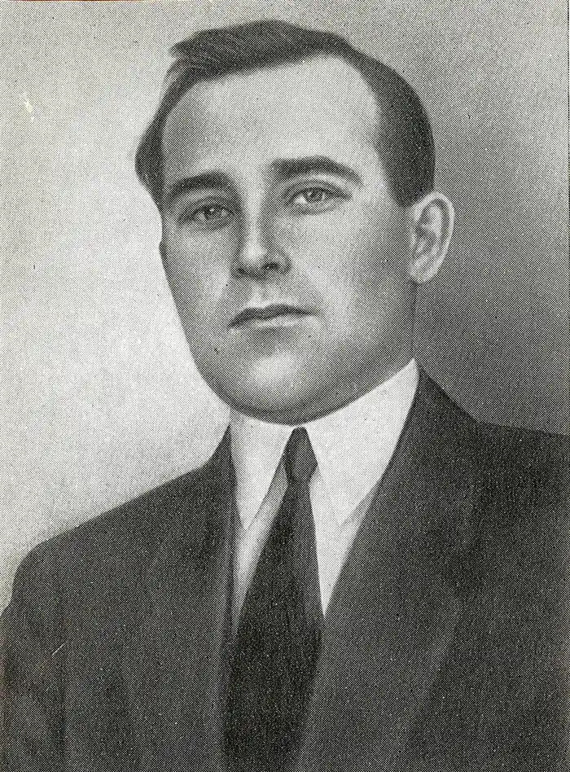

Олесь ДОСВІТНІЙ
Скрипаль-Міщенко Олександр Федорович (літ. псевдонім Олесь Досвітній) народився 8 листопада 1891 року в повітовому містечку Вовча (теперішній Вовчанськ) на Харківщині в багатодітній сім'ї дрібного крамаря. Початкову освіту здобув у земській чотирирічній школі, екстерном закінчив гімназію, вступив на фізико-математичний факультет Петербурзького університету, звідки був виключений як активний учасник революційного руху.
У роки першої світової війни перебував рядовим на фронті. За революційну агітацію в царській армії був засуджений до страти, але втік за кодон. У Сан-Франціско став кореспондентом соціал-демократичної газети "Нова рада". На рідну землю повернувся 1918 року. Через рік вступив до КП(б)У, працював редактором газети "Галицький комуніст". За пропагандистську роботу на Галичині потрапив до варшавської в'язниці. У березні 1920 року відбув на Велику Україну. Був політкомісаром і головним редактором літературно-агітаційного поїзда "Більшовик",, редагував газети "Хліб і залізо", "Большевик в пути", "Селянська правда" і "Зірка" (Катеринослав). В останні роки життя виконував обов'язки головного редактора сценарного відділу ВУФКУ (Всеукраїнського фотокіноуправління), голову Українського товариства драматургів і композиторів Уривки з романів, повістей, оповідання, фейлетони, літературно-критичні статті друкував в журналах "Вапліте", "Червоний шлях", "Літературний ярмарок". "УЖ", "Шквал", та ін. Належав до літературних організацій "Плуг", ВАПЛІТЕ, ВУСПП. Автор багатьох книг публіцистики, оповідань та повістей: "Новели" (1920), "Тюнгуй" (1924), "На чужині". "Чия віра краща??" (1925). "Алай", "Гюлле" (1927), "Нотатки мандрівника" (1929), "На плавнях", "Піймав", "Постаті", "Сірко" (1930), "На той бік" (1931), "Новели" (1932), романів "Американці" (1925), "Хто?" (1927), "Нас було троє" (1929), "Кварцит" (1932). Його твори видавалися російською, англійською, німецькою та іншими мовами. 7 грудня 1933 року помічник уповноваженого слідчої групи секретно-політичного відділу ДПУ УРСР Гольдман, розглянувши матеріали, що звинувачували Досвітнього О. Ф. у "приналежності до української контрреволюційної організації, яка намагалася повалити Радянську владу", ухвалила: "вибрати запобіжним заходом проти уникнення ним суду і слідства — утримання під вартою в спецкорпусі ДПУ". 19 грудня 1933 року Досвітнього заарештовано в Харкові. Слідство вів уповноважений ДПУ УРСР Грушевський, який до згаданих звинувачень додав "участь в терористичній діяльності", зокрема підготовку замаху на Постишева. На черговому допиті 29 грудня 1933 року Досвітній "визнав" себе приналежним до контрреволюційної організації, а 10 січня 1934 року звернувся до слідчого із заявою, де засуджував свої "злочини" і просив дати можливість "відданою роботою на соціалістичному будівництві довести свою відданість великій справі партії і Радянської влади". В обвинувальному висновку слідчий запропонував судовій "трійці" ув'язнити підсудного у виправно-трудові табори на 10 років. Заступник прокурора ДПУ УРСР наклав свою резолюцію, в якій запропонував розстріл. Судова трійка на закритому засіданні 23 лютого 1934 року підтримала "вищу міру соціального захисту". 3 березня 1934 р. колегія ОДПУ винесла вирок — розстріл. Акту про виконання вироку у справі не виявлено. На клопотання дружини письменника і за протестом прокурора військовий трибунал Київського військового округу 25 травня 1955 року скасував постанову колегії ОДПУ від 3 березня 1934 року і справу припинив через відсутність складу злочину Олександр Мукомела ЛУ 25.07.1991